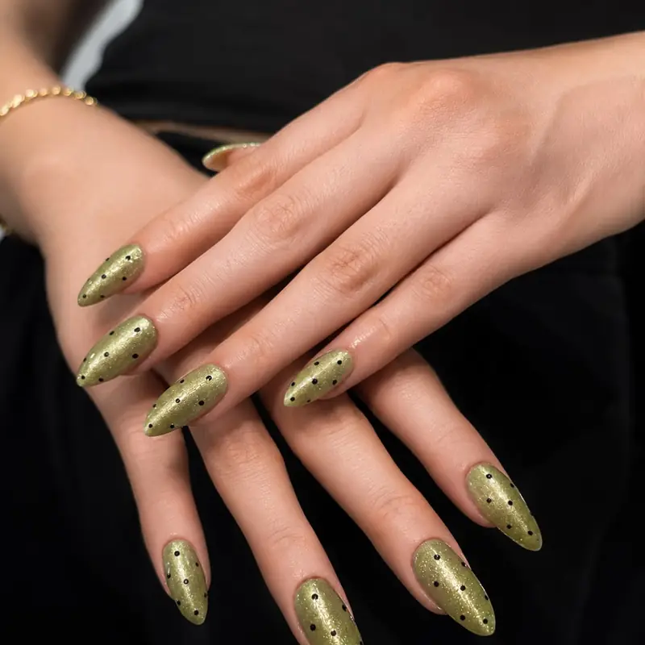

Karabağlar protez tırnak ve Karabağlar kalıcı oje uygulamaları için Fleura Nails — İzmir'in köklü ilçesi Karabağlar'da, kendi evinizin konforunda profesyonel tırnak bakımı sunuyoruz.

Karabağlar'da Hizmet Verdiğimiz Mahalleler
Karabağlar'da Sunduğumuz Hizmetler
- Protez Tırnak: Akrilik, jel ve fiber glass seçenekleriyle uzun ömürlü tırnak uzatma.
- Kalıcı Oje: 3-4 hafta dayanıklı, yüzlerce renk seçeneğiyle profesyonel uygulama.
- Nail Art: Çiçek, geometrik, ombre ve özel tasarımlar.
- Manikür: Tırnak bakımı, şekillendirme ve cilalama.
- Protez Tırnak Dolgusu: Mevcut protez tırnak için 2-4 haftada bir bakım.
Neden Karabağlar'da Fleura Nails?
- VIP ev hizmeti: Salon açılış saatlerini beklemenize gerek yok.
- Otoklav sterilizasyon: Metal ekipmanlar her müşteri sonrası sterilize edilir.
- Profesyonel ürünler: Salon kullanımına yönelik jel ve kalıcı oje sistemleri.
- Esnek randevu: Sabah erken veya akşam geç saatler dahil.
- Tek kullanımlık malzeme: Törpü ve buffer her randevuda yeni açılır.
Karabağlar'da Evde Tırnak Hizmeti Nasıl İşliyor?
Fleura Nails'in fiziksel salonu bulunmuyor; uygulamayı Karabağlar'daki adresinizde yapıyoruz. Lamba, freze ve steril ekipmanın tamamı bizimle geliyor; sizden istediğimiz tek şey masa yüksekliğinde bir yüzey, iki sandalye ve yakında bir priz. Çalışma alanını kendi örtümüzle kurup işlem sonunda topluyoruz.
Karabağlar İzmir'in en geniş nüfuslu ilçelerinden biri ve mahalleler arası mesafe uzun olabiliyor. Bu yüzden randevuları gün içinde bölgeye göre gruplayarak planlıyoruz — adresinizi ve mahallenizi baştan yazdığınızda size en uygun saat aralığını daha net verebiliyoruz. Merkez ilçe kapsamında olduğu için ulaşım listedeki fiyata dahildir.
En Çok Sorulan: Hangi Uygulamayı Seçmeliyim?
Sadece bakımlı bir görünüm istiyorsanız manikür yeterli. Kalıcı renk arıyorsanız manikür ve kalıcı oje doğru seçim. Tırnağınız kırılıyor ama uzatmak istemiyorsanız jel güçlendirme, uzunluk ve belirgin form istiyorsanız protez tırnak devreye giriyor. Kararsızsanız tırnaklarınızın fotoğrafını gönderin; hangisinin uyduğunu ve toplam süreyi randevudan önce söylüyoruz.
Karabağlar Randevusu Alın
Poligon, Yeşilyurt, Üçkuyular veya Limontepe adresinize uygun saat için WhatsApp'tan yazın.
İlgili hizmetler: Buca tırnak · Balçova protez tırnak · İzmir kalıcı oje · Fiyat listesi
Sık Sorulan Sorular
Gaziemir'e de geliyor musunuz?
Evet. Gaziemir ayrı bir ilçe; oradaki randevular için Gaziemir sayfamıza bakabilirsiniz. Karabağlar ile komşu olduğu için ikisini aynı güne planlayabildiğimizde daha esnek saat sunabiliyoruz.
Protez tırnak uygulaması evde yapılabilir mi?
Evet, tüm ekipmanlarımızı evinize getiriyoruz. Otoklav sterilize ekipman ve profesyonel UV/LED lambamızla salon kalitesinde uygulama yapıyoruz.
Kalıcı oje ne kadar dayanır?
Doğru bakımla 3-4 hafta dayanır. Tırnak yağı kullanımı ve eldivenle bulaşık yıkamak ömrü uzatır.